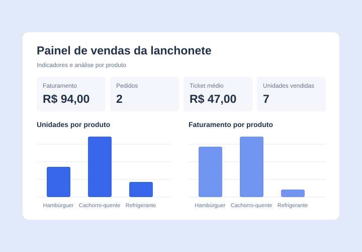
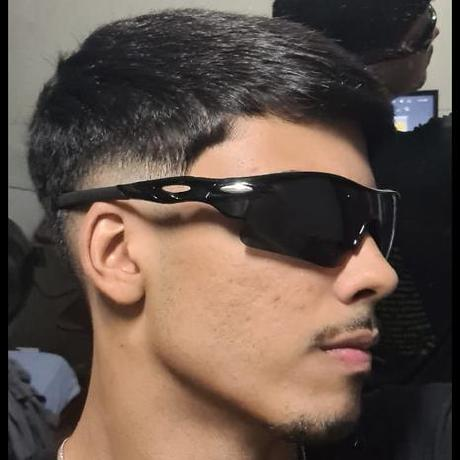
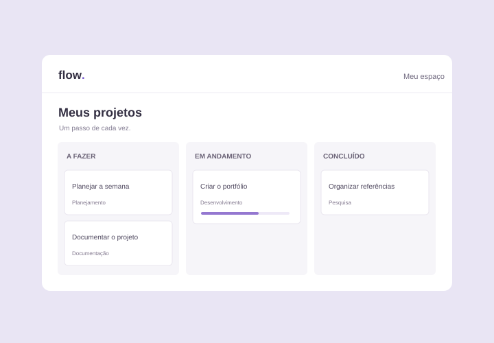

01Capa ilustrativaDashboard de vendas
Em desenvolvimento
Painel de vendas de uma lanchonete com faturamento, pedidos, ticket médio e gráficos de quantidade e receita por produto.
OLÁ, EU SOU
Estagiário na GEJUD BRB
Conheça meus projetos pessoais, o que estou aprendendo e as soluções que desenvolvo ao longo da minha trajetória.
PROJETOS PESSOAIS aprendizado em construção

01 — PROJETOS
Uma seleção do que estou construindo.
Código aberto, ideias e aprendizado na prática.

01Capa ilustrativaEm desenvolvimento
Painel de vendas de uma lanchonete com faturamento, pedidos, ticket médio e gráficos de quantidade e receita por produto.

02Capa ilustrativaLista de tarefas com edição, filtros por status, modo escuro e salvamento no navegador para organizar atividades do dia a dia.
02 — SOBRE MIM
Cada projeto é uma oportunidade de aprender algo novo — e de transformar esse aprendizado em algo que faça sentido.
Sou João Carlos Melo Moura e atualmente atuo como estagiário na GEJUD BRB. Reúno aqui meus projetos pessoais para compartilhar meu aprendizado e tornar minha trajetória mais próxima de quem deseja conhecer meu trabalho.
Os projetos são uma forma de colocar ideias em prática, organizar conhecimentos e acompanhar minha evolução. Você pode explorar meu código no GitHub ou entrar em contato para conversar sobre meu trabalho e novas oportunidades.
Tecnologias que aparecem nos meus projetos.
03 — CONTATO
Tem uma oportunidade, um projeto em mente ou quer conhecer melhor meu trabalho? Vamos conversar.
jc5oujc5@gmail.com